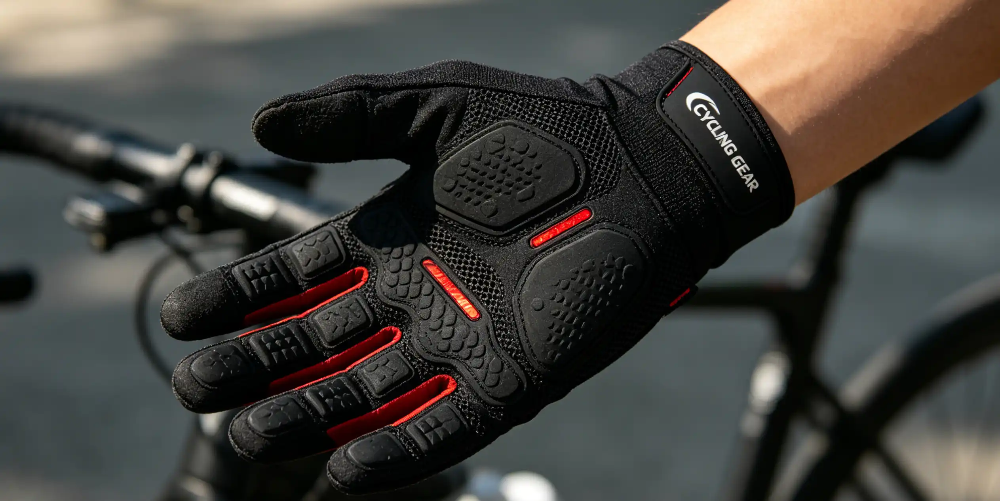

Walking into a bike shop and seeing three otherwise identical bikes with wildly different price tags—899 for the aluminum model, $1,799 for steel, and $3,499 for carbon—can feel disorienting. The frame material is the single biggest factor in how a bike rides, weighs, and empties your wallet. This guide breaks down the real-world differences between steel, aluminum, and carbon fiber frames so you can walk into that shop knowing exactly what you are paying for and which material matches your riding style, budget, and long-term goals.
My Journey Through All Three Frame Materials
I started cycling seriously in 2015 on a used 2008 Surly Cross-Check—a chromoly steel frame that weighed around 24 pounds complete. I commuted 12 miles round-trip on it through Portland rain for three years, and the frame never complained. In 2018, I upgraded to a Cannondale CAAD12 aluminum race bike. The difference was immediate: the CAAD12 weighed 18.2 pounds and felt like it wanted to sprint away from every stoplight. However, after a 65-mile ride on chip-seal roads outside Bend, Oregon, my hands were numb and my lower back ached. In 2022, I bought a Giant TCR Advanced Pro carbon frameset for $2,200 and built it up with Shimano Ultegra components. The first ride on smooth pavement felt like floating—the carbon dampened road buzz that the aluminum had transmitted straight to my body. But six months later, a minor crash in a criterium cracked the top tube. The repair cost $350 at a carbon specialist in Seattle. Lesson learned: every material is a trade-off.
Steel Frames: The Timeless Workhorse
Steel frames are typically made from chromoly (chromium-molybdenum) alloys like Reynolds 520, 725, or 853, or Columbus Spirit and Zona tubing. Modern steel is not the gas-pipe material of your grandfather's Schwinn. A high-end Reynolds 853 frameset from brands like Ritchey or All-City weighs around 4.0-4.5 pounds (1.8-2.0 kg) for the frame alone—competitive with mid-range aluminum. The defining characteristic of steel is its fatigue life: steel has an endurance limit, meaning if stresses stay below a certain threshold, it can theoretically last forever. This is why you see 40-year-old steel frames still on the road. The ride quality is often described as "lively" or "springy" because steel naturally flexes and returns energy. On rough pavement, the material absorbs high-frequency vibrations better than aluminum. The main drawback is rust—if you chip the paint, you need to touch it up. Steel frames also tend to be heavier at any given price point. A complete Surly Straggler build weighs around 24 pounds and costs $1,899; a comparable carbon bike might weigh 18 pounds but cost $3,000+.
Aluminum Frames: The Performance Value King
Aluminum dominates the $800-$2,000 price range for good reason. Modern aluminum alloys like 6061 and 7005, combined with hydroforming (shaping tubes with pressurized fluid), allow manufacturers to create complex tube shapes that optimize stiffness where needed. The Cannondale CAAD13, widely considered the best aluminum race bike, uses SmartForm C1 Premium Alloy and weighs approximately 1,250 grams for a size 56 frame. The Trek Emonda ALR 5 at $2,299 uses 300 Series Alpha Aluminum with a frame weight of 1,131 grams—lighter than many entry-level carbon frames. Aluminum's Achilles' heel is ride comfort. The material has no fatigue limit, and its stiffness transmits road vibrations directly to the rider. However, modern engineering has mitigated this: the Specialized Allez Sprint uses a D'Aluisio Smartweld technique that allows thinner tube walls in non-stressed areas, and many aluminum bikes now include carbon fork and seatpost combinations to improve compliance. For a first serious road bike, it is hard to beat an aluminum frame with a carbon fork.
Carbon Fiber: The King of Weight and Aerodynamics
Carbon fiber is not a single material but a composite of carbon filaments embedded in epoxy resin. The layup—the direction and sequence of carbon sheets—determines the frame's stiffness, compliance, and strength. This is why two carbon frames can feel completely different. The Specialized S-Works Tarmac SL8 frame weighs 685 grams (size 56) and costs $5,500 for the frameset alone. The Trek Madone SLR Gen 8 uses 800 Series OCLV Carbon and weighs around 950 grams. Carbon excels at being shaped into aerodynamic profiles: the Canyon Aeroad CFR's Kamm-tail tube shapes would be impossible to manufacture in metal. On the downside, carbon is brittle. A sharp impact that would dent steel or aluminum can crack carbon. It is also sensitive to clamping forces—over-tightening a seatpost clamp can crush the tube. Repair is possible but expensive: Calfee Design charges $200-$600 depending on the damage. Carbon frames also degrade under prolonged UV exposure and high heat, so never leave a carbon bike inside a hot car on a summer day.
Head-to-Head Comparison: Steel vs Aluminum vs Carbon
| Criteria | Steel (Chromoly) | Aluminum (6061/7005) | Carbon Fiber |
|---|---|---|---|
| Average Frame Weight | 1,800-2,500g | 1,100-1,500g | 685-1,200g |
| Entry-Level Complete Bike | $1,200-$1,800 | $800-$1,200 | $2,000-$2,800 |
| High-End Frameset | $1,200-$2,000 | $1,000-$1,500 | $3,000-$6,000 |
| Ride Comfort | Excellent | Fair (improved w/ carbon fork) | Excellent (tunable) |
| Stiffness-to-Weight | Moderate | High | Very High |
| Crash Durability | Dents, rarely fails | Dents, can crack | Cracks, requires repair |
| Fatigue Life | Infinite (below limit) | Finite | Finite |
| Rust/Corrosion | Yes (needs care) | Minimal | None |
| Repairability | Easy (weldable) | Difficult | Specialist only |
| Aero Shaping | Limited | Moderate | Excellent |
Who This Is For (And Who It's Not)
Best for steel: Touring cyclists, commuters, gravel riders who prioritize durability and comfort, and anyone who plans to keep the same bike for 20+ years. Also ideal for heavier riders (220+ lbs) who benefit from steel's higher tensile strength.
Not ideal for steel: Weight-obsessed racers and riders in coastal, humid climates who do not want to maintain paint and fight rust.
Best for aluminum: First-time road bike buyers with a budget of $1,000-$2,000, criterium racers who want a stiff and responsive bike, and anyone who wants near-carbon performance at half the price.
Not ideal for aluminum: Riders with chronic back or hand pain who need maximum vibration damping, and ultra-long-distance riders (200km+) who will feel every mile of road chatter.
Best for carbon: Competitive road racers, triathletes, and serious enthusiasts who can afford the premium and are willing to accept the fragility trade-off for the weight and aero benefits.
Not ideal for carbon: Budget-conscious riders, bike tourers carrying heavy loads, and anyone who is rough on equipment or frequently travels with their bike.